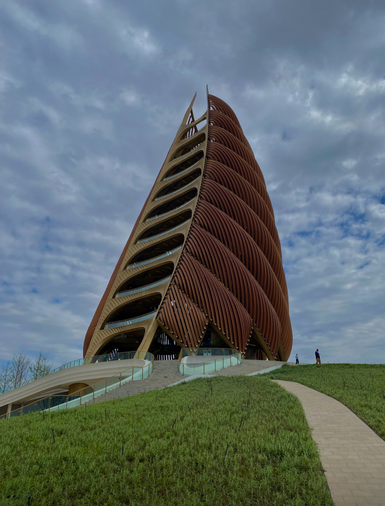
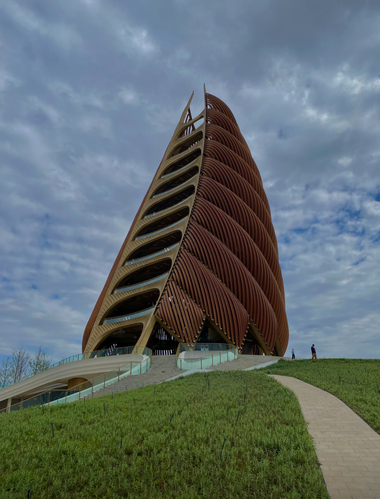

Some places I would love to visit!
- Other provinces in China
- Japan
- South Korea
- Thailand
- Switzerland
I am incredibly grateful for all the opportunities I've had to travel everywhere! I love taking photos so everytime I go anywhere, I tend to document it.
Some photos are taken on my iPhone and some are from my camera (Canon Powershot SX170 IS)!
I grew up in SoCal, specifically Orange County area, which is right next to Los Angeles county. Here are some pictures of my hometown!
One of my favorite parts of living here is that we have Little Saigon, and I get to drive my car (I do not like walking a lot because I have knee deformities and it gets painful).

Some photos from my daytrip to San Diego last year with my sister, which was a 2 hour drive from Orange County.
I was born in Sài Gòn (Hồ Chí Minh), Việt Nam, and although my family immigrated to America when I was 2, I still consider Việt Nam as home.
I usually visit every 2-4 years when I get the chance, but my most recent visits were last October and this summer during July!
I have also been to other cities besides Sài Gòn, which include Mỹ Tho (my dad's hometown), Nha Trang, Vũng Tàu, Phan Thiết, and Đà Lạt.

Las Vegas is around a 4 hour drive from Orange County, so my family and relatives go there for vacation!
Throughout my life, I've been to Vegas at least 6 times. I prefer going in the summertime over winter.
I went to Maui on vacation with my mom, sister, and two friends after I graduated high school!

Before I started my study away year in New York, I visited in 2018 during March/April for a school trip and again in July of 2023 for fun.
During my visit last year, I actually stayed in New Jersey and commuted to the city every day.
During spring break of this year, my friends and I went to Hong Kong!
Hong Kong was definitely one of my favorite trips, although my expensive perscription glasses did unfortunately get stolen on the last day.


My home campus is NYU Shanghai, so I've lived in Shanghai for the past two years. I will be returning for my senior year!
Some of my favorite parts of Shanghai/China in general include the ease of transportation, online shopping, food delivery, and how comparatively cheaper everything is!
Everything you need is always on your phone, which makes daily life incredibly convenient! It is also super clean and safe.


My friends and I went to Suzhou for a day trip. It was a short train ride from Shanghai.

During spring break of my first year in college, my roommate and I went to Chengdu! We saw a lot of pandas!
Fun fact: I met some of my now closest friends during this trip, and although we went to the same college, we did not know each other before.

 

During spring break of my first year in college, my roommate and I went to Nanjing after we went to Chengdu! We met up with her high school friend and she took us around.
Fun fact: We went to a zoo and a bird pooped right on top of my head.